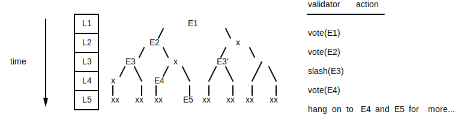

What is Solana?
Solana is the name of an open source project that is implementing a new, high-performance, permissionless blockchain. Solana is also the name of a company headquartered in San Francisco that maintains the open source project.
About this Book
This book describes the Solana open source project, a blockchain built from the ground up for scale. The book covers why it's useful, how to use it, how it works, and why it will continue to work long after the company Solana closes its doors. The goal of the Solana architecture is to demonstrate there exists a set of software algorithms that when used in combination to implement a blockchain, removes software as a performance bottleneck, allowing transaction throughput to scale proportionally with network bandwidth. The architecture goes on to satisfy all three desirable properties of a proper blockchain: it is scalable, secure and decentralized.
The architecture describes a theoretical upper bound of 710 thousand transactions per second (tps) on a standard gigabit network and 28.4 million tps on 40 gigabit. Furthermore, the architecture supports safe, concurrent execution of programs authored in general purpose programming languages such as C or Rust.
Disclaimer
All claims, content, designs, algorithms, estimates, roadmaps, specifications, and performance measurements described in this project are done with the author's best effort. It is up to the reader to check and validate their accuracy and truthfulness. Furthermore, nothing in this project constitutes a solicitation for investment.
History of the Solana Codebase
In November of 2017, Anatoly Yakovenko published a whitepaper describing Proof of History, a technique for keeping time between computers that do not trust one another. From Anatoly's previous experience designing distributed systems at Qualcomm, Mesosphere and Dropbox, he knew that a reliable clock makes network synchronization very simple. When synchronization is simple the resulting network can be blazing fast, bound only by network bandwidth.
Anatoly watched as blockchain systems without clocks, such as Bitcoin and Ethereum, struggled to scale beyond 15 transactions per second worldwide when centralized payment systems such as Visa required peaks of 65,000 tps. Without a clock, it was clear they'd never graduate to being the global payment system or global supercomputer most had dreamed them to be. When Anatoly solved the problem of getting computers that don’t trust each other to agree on time, he knew he had the key to bring 40 years of distributed systems research to the world of blockchain. The resulting cluster wouldn't be just 10 times faster, or a 100 times, or a 1,000 times, but 10,000 times faster, right out of the gate!
Anatoly's implementation began in a private codebase and was implemented in the C programming language. Greg Fitzgerald, who had previously worked with Anatoly at semiconductor giant Qualcomm Incorporated, encouraged him to reimplement the project in the Rust programming language. Greg had worked on the LLVM compiler infrastructure, which underlies both the Clang C/C++ compiler as well as the Rust compiler. Greg claimed that the language's safety guarantees would improve software productivity and that its lack of a garbage collector would allow programs to perform as well as those written in C. Anatoly gave it a shot and just two weeks later, had migrated his entire codebase to Rust. Sold. With plans to weave all the world's transactions together on a single, scalable blockchain, Anatoly called the project Loom.
On February 13th of 2018, Greg began prototyping the first open source implementation of Anatoly's whitepaper. The project was published to GitHub under the name Silk in the loomprotocol organization. On February 28th, Greg made his first release, demonstrating 10 thousand signed transactions could be verified and processed in just over half a second. Shortly after, another former Qualcomm cohort, Stephen Akridge, demonstrated throughput could be massively improved by offloading signature verification to graphics processors. Anatoly recruited Greg, Stephen and three others to co-found a company, then called Loom.
Around the same time, Ethereum-based project Loom Network sprung up and many people were confused about whether they were the same project. The Loom team decided it would rebrand. They chose the name Solana, a nod to a small beach town North of San Diego called Solana Beach, where Anatoly, Greg and Stephen lived and surfed for three years when they worked for Qualcomm. On March 28th, the team created the Solana Labs GitHub organization and renamed Greg's prototype Silk to Solana.
In June of 2018, the team scaled up the technology to run on cloud-based networks and on July 19th, published a 50-node, permissioned, public testnet consistently supporting bursts of 250,000 transactions per second. In a later release in December, called v0.10 Pillbox, the team published a permissioned testnet running 150 nodes on a gigabit network and demonstrated soak tests processing an average of 200 thousand transactions per second with bursts over 500 thousand. The project was also extended to support on-chain programs written in the C programming language and run concurrently in a safe execution environment called BPF.
What is a Solana Cluster?
A cluster is a set of computers that work together and can be viewed from the outside as a single system. A Solana cluster is a set of independently owned computers working together (and sometimes against each other) to verify the output of untrusted, user-submitted programs. A Solana cluster can be utilized any time a user wants to preserve an immutable record of events in time or programmatic interpretations of those events. One use is to track which of the computers did meaningful work to keep the cluster running. Another use might be to track the possession of real-world assets. In each case, the cluster produces a record of events called the ledger. It will be preserved for the lifetime of the cluster. As long as someone somewhere in the world maintains a copy of the ledger, the output of its programs (which may contain a record of who possesses what) will forever be reproducible, independent of the organization that launched it.
What are Sols?
A sol is the name of Solana's native token, which can be passed to nodes in a Solana cluster in exchange for running an on-chain program or validating its output. The Solana protocol defines that only 1 billion sols will ever exist, but that the system may perform micropayments of fractional sols, and that a sol may be split as many as 34 times. The fractional sol is called a lamport. It is named in honor of Solana's biggest technical influence, Leslie Lamport. A lamport has a value of approximately 0.0000000000582 sol (2^-34).
Terminology
The following terms are used throughout this book.
account
A persistent file addressed by public key and with lamports tracking its lifetime.
app
A front-end application that interacts with a Solana cluster.
blob
A fraction of a block; the smallest unit sent between fullnodes.
block
A contiguous set of entries on the ledger covered by a vote. The duration of a block is some cluster-configured number of ticks. Also called voting period.
block height
The number of blocks beneath the current block plus one. The genesis block, for example, has block height 1.
bootstrap leader
The first fullnode to take the leader role.
client
A node that utilizes the cluster.
cluster
A set of fullnodes maintaining a single ledger.
confirmation
The wallclock duration between a leader creating a tick entry and recognizing a supermajority of ledger votes with a ledger interpretation that matches the leader's.
control plane
A gossip network connecting all nodes of a cluster.
data plane
A multicast network used to efficiently validate entries and gain consensus.
drone
An off-chain service that acts as a custodian for a user's private key. It typically serves to validate and sign transactions.
entry
An entry on the ledger either a tick or a transactions entry.
epoch
The time, i.e. number of slots, for which a leader schedule is valid.
fork
A ledger derived from common entries but then diverged.
fullnode
A full participant in the cluster either a leader or validator node.
fullnode state
The result of interpreting all programs on the ledger a given tick height. It includes at least the set of all accounts holding nonzero native tokens.
genesis block
The first block of the ledger.
hash
A digital fingerprint of a sequence of bytes.
instruction
The smallest unit of a program that a client can include in a transaction.
keypair
A public key and coesponding secret key.
lamport
A fractional native token with the value of approximately 0.0000000000582 sol (2^-34).
loader
A program with the ability to interpret the binary encoding of other on-chain programs.
leader
The role of a fullnode when it is appending entries to the ledger.
leader schedule
A sequence of fullnode public keys. The cluster uses the leader schedule to determine which fullnode is the leader at any moment in time.
ledger
A list of entries containing transactions signed by clients.
ledger vote
A hash of the fullnode's state at a given tick height. It comprises a validator's affirmation that a block it has received has been verified, as well as a promise not to vote for a conflicting block (i.e. fork) for a specific amount of time, the lockout period.
light client
A type of client that can verify it's pointing to a valid cluster. It performs more ledger verification than a thin client and less than a fullnode.
lockout
The duration of time for which a fullnode is unable to vote on another fork.
native token
The token used to track work done by nodes in a cluster.
node
A computer particpating in a cluster.
node count
The number of fullnodes participating in a cluster.
PoH
See Proof of History.
program
The code that interprets instructions.
program ID
The public key of the account containing a program.
Proof of History
A stack of proofs, each which proves that some data existed before the proof was created and that a precise duration of time passed before the previous proof. Like a VDF, a Proof of History can be verified in less time than it took to produce.
public key
The public key of a keypair.
runtime
The component of a fullnode responsible for program execution.
secret key
The private key of a keypair.
slot
The time (i.e. number of blocks) for which a leader ingests transactions and produces entries.
sol
The native token tracked by a cluster recognized by the company Solana.
stake
Tokens forfeit to the cluster if malicious fullnode behavior can be proven.
thin client
A type of client that trusts it is communicating with a valid cluster.
tick
A ledger entry that estimates wallclock duration.
tick height
token
A scarce, fungible member of a set of tokens.
tps
Transactions per second.
transaction
One or more instructions signed by the client and executed atomically.
transactions entry
A set of transactions that may be executed in parallel.
validator
The role of a fullnode when it is validating the leader's latest entries.
VDF
See verifiable delay function.
verifiable delay function
A function that takes a fixed amount of time to execute that produces a proof that it ran, which can then be verified in less time than it took to produce.
vote
See ledger vote.
voting period
The duration of a block.
Getting Started
The Solana git repository contains all the scripts you might need to spin up your own local testnet. Depending on what you're looking to achieve, you may want to run a different variation, as the full-fledged, performance-enhanced multinode testnet is considerably more complex to set up than a Rust-only, singlenode testnode. If you are looking to develop high-level features, such as experimenting with smart contracts, save yourself some setup headaches and stick to the Rust-only singlenode demo. If you're doing performance optimization of the transaction pipeline, consider the enhanced singlenode demo. If you're doing consensus work, you'll need at least a Rust-only multinode demo. If you want to reproduce our TPS metrics, run the enhanced multinode demo.
For all four variations, you'd need the latest Rust toolchain and the Solana source code:
First, install Rust's package manager Cargo.
$ curl https://sh.rustup.rs -sSf | sh
$ source $HOME/.cargo/env
Now checkout the code from github:
$ git clone https://github.com/solana-labs/solana.git
$ cd solana
The demo code is sometimes broken between releases as we add new low-level features, so if this is your first time running the demo, you'll improve your odds of success if you check out the latest release before proceeding:
$ TAG=$(git describe --tags $(git rev-list --tags --max-count=1))
$ git checkout $TAG
Configuration Setup
The network is initialized with a genesis ledger and fullnode configuration files. These files can be generated by running the following script.
$ ./multinode-demo/setup.sh
Drone
In order for the fullnodes and clients to work, we'll need to spin up a drone to give out some test tokens. The drone delivers Milton Friedman-style "air drops" (free tokens to requesting clients) to be used in test transactions.
Start the drone with:
$ ./multinode-demo/drone.sh
Singlenode Testnet
Before you start a fullnode, make sure you know the IP address of the machine you want to be the bootstrap leader for the demo, and make sure that udp ports 8000-10000 are open on all the machines you want to test with.
Now start the bootstrap leader in a separate shell:
$ ./multinode-demo/bootstrap-leader.sh
Wait a few seconds for the server to initialize. It will print "leader ready..." when it's ready to receive transactions. The leader will request some tokens from the drone if it doesn't have any. The drone does not need to be running for subsequent leader starts.
Multinode Testnet
To run a multinode testnet, after starting a leader node, spin up some additional full nodes in separate shells:
$ ./multinode-demo/fullnode-x.sh
To run a performance-enhanced full node on Linux, CUDA 10.0 must be installed on your system:
$ ./fetch-perf-libs.sh
$ SOLANA_CUDA=1 ./multinode-demo/bootstrap-leader.sh
$ SOLANA_CUDA=1 ./multinode-demo/fullnode-x.sh
Testnet Client Demo
Now that your singlenode or multinode testnet is up and running let's send it some transactions!
In a separate shell start the client:
$ ./multinode-demo/client.sh # runs against localhost by default
What just happened? The client demo spins up several threads to send 500,000 transactions to the testnet as quickly as it can. The client then pings the testnet periodically to see how many transactions it processed in that time. Take note that the demo intentionally floods the network with UDP packets, such that the network will almost certainly drop a bunch of them. This ensures the testnet has an opportunity to reach 710k TPS. The client demo completes after it has convinced itself the testnet won't process any additional transactions. You should see several TPS measurements printed to the screen. In the multinode variation, you'll see TPS measurements for each validator node as well.
Testnet Debugging
There are some useful debug messages in the code, you can enable them on a per-module and per-level basis. Before running a leader or validator set the normal RUST_LOG environment variable.
For example
-
To enable
infoeverywhere anddebugonly in the solana::banking_stage module:$ export RUST_LOG=solana=info,solana::banking_stage=debug -
To enable BPF program logging:
$ export RUST_LOG=solana_bpf_loader=trace
Generally we are using debug for infrequent debug messages, trace for potentially frequent
messages and info for performance-related logging.
You can also attach to a running process with GDB. The leader's process is named solana-fullnode:
$ sudo gdb
attach <PID>
set logging on
thread apply all bt
This will dump all the threads stack traces into gdb.txt
Public Testnet
In this example the client connects to our public testnet. To run validators on the testnet you would need to open udp ports 8000-10000.
$ ./multinode-demo/client.sh --network $(dig +short testnet.solana.com):8001 --duration 60
You can observe the effects of your client's transactions on our dashboard
Linux Snap
A Linux Snap is available, which can be used to easily get Solana running on supported Linux systems without building anything from source for evaluation. Note that CUDA is not supported by the Snap so performance will be limited.
The edge Snap channel is updated daily with the latest
development from the master branch. To install:
$ sudo snap install solana --edge --devmode
Once installed the usual Solana programs will be available as solona.* instead
of solana-*. For example, solana.fullnode instead of solana-fullnode.
Update to the latest version at any time with:
$ snap info solana
$ sudo snap refresh solana --devmode
Daemon Support
The snap supports running fullnodes and a drone as system daemons.
Run sudo snap get solana to view the current daemon configuration. To view
daemon logs:
- Run
sudo snap logs -n=all solanato view the daemon initialization log - Runtime logging can be found under
/var/snap/solana/current/bootstrap-leader/,/var/snap/solana/current/fullnode/, or/var/snap/solana/current/drone/depending on whichmode=was selected. Within each log directory the filecurrentcontains the latest log, and the files*.s(if present) contain older rotated logs.
Disable the daemon at any time by running:
$ sudo snap set solana mode=
Runtime configuration files for the daemon can be found in
/var/snap/solana/current/config.
Leader Daemon
$ sudo snap set solana mode=bootstrap-leader
rsync must be configured and running on the leader.
- Ensure rsync is installed with
sudo apt-get -y install rsync - Edit
/etc/rsyncd.confto include the following
[config]
path = /var/snap/solana/current/config
hosts allow = *
read only = true
- Run
sudo systemctl enable rsync; sudo systemctl start rsync - Test by running
rsync -Pzravv rsync://<ip-address-of-leader>/config solana-configfrom another machine. If the leader is running on a cloud provider it may be necessary to configure the Firewall rules to permit ingress to port tcp:873, tcp:9900 and the port range udp:8000-udp:10000
To run both the Leader and Drone:
$ sudo snap set solana mode=bootstrap-leader+drone
Validator daemon
$ sudo snap set solana mode=fullnode
By default the node will attempt to connect to testnet.solana.com, override the cluster entrypoint IP address by running:
$ sudo snap set solana mode=fullnode entrypoint-ip=127.0.0.1 #<-- change IP address
It's assumed that the node at the entrypoint IP will be running rsync
configured as described in the previous Leader daemon section.
Example app: Web Wallet
Build and run a web wallet locally
First fetch the example code:
$ git clone https://github.com/solana-labs/example-webwallet.git
$ cd example-webwallet
Next, follow the steps in the git repository's README.
Programming Model
A client app interacts with a Solana cluster by sending it transactions with one or more instructions. The Solana runtime passes those instructions to user-contributed programs. An instruction might, for example, tell a program to move tokens from one account to another or create an interactive contract that governs how tokens are moved. Instructions are executed atomically. If any instruction is invalid, any changes made within the transaction are discarded.
Deploying Programs to a Cluster

As shown in the diagram above a client creates a program and compiles it to an ELF shared object containing BPF bytecode and sends it to the Solana cluster. The cluster stores the program locally and makes it available to clients via a program ID. The program ID is a public key generated by the client and is used to reference the program in subsequent transactions.
A program may be written in any programming language that can target the Berkley Packet Filter (BPF) safe execution environment. The Solana SDK offers the best support for C programs, which is compiled to BPF using the LLVM compiler infrastructure. Alternatively, a client might choose to bypass LLVM and use Python, Lua or C++ to generate BPF directly via the BPF Compiler Collection (BCC).
Storing State between Transactions
If the program needs to store state between transactions, it does so using accounts. Accounts are similar to files in operating systems such as Linux. Like a file, an account may hold arbitrary data and that data persists beyond the lifetime of a program. Also like a file, an account includes metadata that tells the runtime who is allowed to access the data and how. Unlike a file, the account includes metadata for the lifetime of the file. That lifetime is expressed in "tokens", which is a number of fractional native tokens, called lamports. Accounts are held in validator memory and pay "rent" to stay there. Each fullnode periodically scan all accounts and collects rent. Any account that drops to zero lamports is purged.
If an account is marked "executable", it will only be used by a loader to run programs. For example, a BPF-compiled program is marked executable and loaded by the BPF loader. No program is allowed to modify the contents of an executable account.
An account also includes "owner" metadata. The owner is a program ID. The runtime grants the program write access to the account if its ID matches the owner. If an account is not owned by a program, the program is permitted to read its data and credit the account.
In the same way that a Linux user uses a path to look up a file, a Solana client uses public keys to look up accounts. To create an account, the client generates a keypair and registers its public key using the CreateAccount instruction. Once registered, transactions reference account keys to grant programs access to accounts. The runtime grants programs read access by default. To grant write access, the client must either assign the account to a program or sign the transaction using the keypair's secret key. Since only the holder of the secret key can produce valid signatures matching the account's public key, the runtime recognizes the signature as authorization to modify account data or debit the account.
After the runtime executes each of the transaction's instructions, it uses the account metadata and transaction signatures to verify that none of the access rules were violated. If a program violates an access rule, the runtime discards all account changes made by all instructions and marks the transaction as failed.
Example app: Tic-Tac-Toe
Click here to play Tic-Tac-Toe on the Solana testnet. Open the link and wait for another player to join, or open the link in a second browser tab to play against yourself. You will see that every move a player makes stores a transaction on the ledger.
Build and run Tic-Tac-Toe locally
First fetch the latest release of the example code:
$ git clone https://github.com/solana-labs/example-tictactoe.git
$ cd example-tictactoe
$ TAG=$(git describe --tags $(git rev-list --tags
--max-count=1))
$ git checkout $TAG
Next, follow the steps in the git repository's README.
Getting tokens to users
You may have noticed you interacted with the Solana cluster without first needing to aquire tokens to pay transaction fees. Under the hood, the web app creates a new ephemeral identity and sends a request to an off-chain service for a signed transation authorizes a user to start a new game. The service is called a drone. When the app sends the signed transaction to the Solana cluster, the drone's tokens are spent to pay the transaction fee and start the game. In a real world app, the drone might request the user watch an ad or pass a CAPTCHA before signing over its tokens.
Creating Signing Services with Drones
This chapter defines an off-chain service called a drone, which acts as custodian of a user's private key. In its simplest form, it can be used to create airdrop transactions, a token transfer from the drone's account to a client's account.
Signing Service
A drone is a simple signing service. It listens for requests to sign
transaction data. Once received, the drone validates the request however it
sees fit. It may, for example, only accept transaction data with a
SystemInstruction::Move instruction transferring only up to a certain amount
of tokens. If the drone accepts the transaction, it returns an Ok(Signature)
where Signature is a signature of the transaction data using the drone's
private key. If it rejects the transaction data, it returns a DroneError
describing why.
Examples
Granting access to an on-chain game
Creator of on-chain game tic-tac-toe hosts a drone that responds to airdrop
requests containing an InitGame instruction. The drone signs the transaction
data in the request and returns it, thereby authorizing its account to pay the
transaction fee and as well as seeding the game's account with enough tokens to
play it. The user then creates a transaction for its transaction data and the
drones signature and submits it to the Solana cluster. Each time the user
interacts with the game, the game pays the user enough tokens to pay the next
transaction fee to advance the game. At that point, the user may choose to keep
the tokens instead of advancing the game. If the creator wants to defend
against that case, they could require the user to return to the drone to sign
each instruction.
Worldwide airdrop of a new token
Creator of a new on-chain token (ERC-20 interface), may wish to do a worldwide airdrop to distribute its tokens to millions of users over just a few seconds. That drone cannot spend resources interacting with the Solana cluster. Instead, the drone should only verify the client is unique and human, and then return the signature. It may also want to listen to the Solana cluster for recent entry IDs to support client retries and to ensure the airdrop is targeting the desired cluster.
Attack vectors
Invalid last_id
The drone may prefer its airdrops only target a particular Solana cluster. To do that, it listens to the cluster for new entry IDs and ensure any requests reference a recent one.
Note: to listen for new entry IDs assumes the drone is either a fullnode or a light client. At the time of this writing, light clients have not been implemented and no proposal describes them. This document assumes one of the following approaches be taken:
- Define and implement a light client
- Embed a fullnode
- Query the jsonrpc API for the latest last id at a rate slightly faster than ticks are produced.
Double spends
A client may request multiple airdrops before the first has been submitted to
the ledger. The client may do this maliciously or simply because it thinks the
first request was dropped. The drone should not simply query the cluster to
ensure the client has not already received an airdrop. Instead, it should use
last_id to ensure the previous request is expired before signing another.
Note that the Solana cluster will reject any transaction with a last_id
beyond a certain age.
Denial of Service
If the transaction data size is smaller than the size of the returned signature
(or descriptive error), a single client can flood the network. Considering
that a simple Move operation requires two public keys (each 32 bytes) and a
fee field, and that the returned signature is 64 bytes (and a byte to
indicate Ok), consideration for this attack may not be required.
In the current design, the drone accepts TCP connections. This allows clients to DoS the service by simply opening lots of idle connections. Switching to UDP may be preferred. The transaction data will be smaller than a UDP packet since the transaction sent to the Solana cluster is already pinned to using UDP.
A Solana Cluster
A Solana cluster is a set of fullnodes working together to serve client transactions and maintain the integrity of the ledger. Many clusters may coexist. When two clusters share a common genesis block, they attempt to converge. Otherwise, they simply ignore the existence of the other. Transactions sent to the wrong one are quietly rejected. In this chapter, we'll discuss how a cluster is created, how nodes join the cluster, how they share the ledger, how they ensure the ledger is replicated, and how they cope with buggy and malicious nodes.
Creating a Cluster
Before starting any fullnodes, one first needs to create a genesis block. The block contains entries referencing two public keys, a mint and a bootstrap leader. The fullnode holding the bootstrap leader's secret key is responsible for appending the first entries to the ledger. It initializes its internal state with the mint's account. That account will hold the number of native tokens defined by the genesis block. The second fullnode then contacts the bootstrap leader to register as a validator or replicator. Additional fullnodes then register with any registered member of the cluster.
A validator receives all entries from the leader and submits votes confirming those entries are valid. After voting, the validator is expected to store those entries until replicator nodes submit proofs that they have stored copies of it. Once the validator observes a sufficient number of copies exist, it deletes its copy.
Joining a Cluster
Fullnodes and replicators enter the cluster via registration messages sent to its control plane. The control plane is implemented using a gossip protocol, meaning that a node may register with any existing node, and expect its registration to propagate to all nodes in the cluster. The time it takes for all nodes to synchronize is proportional to the square of the number of nodes participating in the cluster. Algorithmically, that's considered very slow, but in exchange for that time, a node is assured that it eventually has all the same information as every other node, and that that information cannot be censored by any one node.
Sending Transactions to a Cluster
Clients send transactions to any fullnode's Transaction Processing Unit (TPU) port. If the node is in the validator role, it forwards the transaction to the designated leader. If in the leader role, the node bundles incoming transactions, timestamps them creating an entry, and pushes them onto the cluster's data plane. Once on the data plane, the transactions are validated by validator nodes and replicated by replicator nodes, effectively appending them to the ledger.
Confirming Transactions
A Solana cluster is capable of subsecond confirmation for up to 150 nodes with plans to scale up to hundreds of thousands of nodes. Once fully implemented, confirmation times are expected to increase only with the logarithm of the number of validators, where the logarithm's base is very high. If the base is one thousand, for example, it means that for the first thousand nodes, confirmation will be the duration of three network hops plus the time it takes the slowest validator of a supermajority to vote. For the next million nodes, confirmation increases by only one network hop.
Solana defines confirmation as the duration of time from when the leader timestamps a new entry to the moment when it recognizes a supermajority of ledger votes.
A gossip network is much too slow to achieve subsecond confirmation once the network grows beyond a certain size. The time it takes to send messages to all nodes is proportional to the square of the number of nodes. If a blockchain wants to achieve low confirmation and attempts to do it using a gossip network, it will be forced to centralize to just a handful of nodes.
Scalable confirmation can be achieved using the follow combination of techniques:
- Timestamp transactions with a VDF sample and sign the timestamp.
- Split the transactions into batches, send each to separate nodes and have each node share its batch with its peers.
- Repeat the previous step recursively until all nodes have all batches.
Solana rotates leaders at fixed intervals, called slots. Each leader may only produce entries during its allotted slot. The leader therefore timestamps transactions so that validators may lookup the public key of the designated leader. The leader then signs the timestamp so that a validator may verify the signature, proving the signer is owner of the designated leader's public key.
Next, transactions are broken into batches so that a node can send transactions to multiple parties without making multiple copies. If, for example, the leader needed to send 60 transactions to 6 nodes, it would break that collection of 60 into batches of 10 transactions and send one to each node. This allows the leader to put 60 transactions on the wire, not 60 transactions for each node. Each node then shares its batch with its peers. Once the node has collected all 6 batches, it reconstructs the original set of 60 transactions.
A batch of transactions can only be split so many times before it is so small that header information becomes the primary consumer of network bandwidth. At the time of this writing, the approach is scaling well up to about 150 validators. To scale up to hundreds of thousands of validators, each node can apply the same technique as the leader node to another set of nodes of equal size. We call the technique data plane fanout, but it is not yet implemented.
Synchronization
Fast, reliable synchronization is the biggest reason Solana is able to achieve such high throughput. Traditional blockchains synchronize on large chunks of transactions called blocks. By synchronizing on blocks, a transaction cannot be processed until a duration called "block time" has passed. In Proof of Work consensus, these block times need to be very large (~10 minutes) to minimize the odds of multiple fullnodes producing a new valid block at the same time. There's no such constraint in Proof of Stake consensus, but without reliable timestamps, a fullnode cannot determine the order of incoming blocks. The popular workaround is to tag each block with a wallclock timestamp. Because of clock drift and variance in network latencies, the timestamp is only accurate within an hour or two. To workaround the workaround, these systems lengthen block times to provide reasonable certainty that the median timestamp on each block is always increasing.
Solana takes a very different approach, which it calls Proof of History or PoH. Leader nodes "timestamp" blocks with cryptographic proofs that some duration of time has passed since the last proof. All data hashed into the proof most certainly have occurred before the proof was generated. The node then shares the new block with validator nodes, which are able to verify those proofs. The blocks can arrive at validators in any order or even could be replayed years later. With such reliable synchronization guarantees, Solana is able to break blocks into smaller batches of transactions called entries. Entries are streamed to validators in realtime, before any notion of block consensus.
Solana technically never sends a block, but uses the term to describe the sequence of entries that fullnodes vote on to achieve confirmation. In that way, Solana's confirmation times can be compared apples to apples to block-based systems. The current implementation sets block time to 800ms.
What's happening under the hood is that entries are streamed to validators as quickly as a leader node can batch a set of valid transactions into an entry. Validators process those entries long before it is time to vote on their validity. By processing the transactions optimistically, there is effectively no delay between the time the last entry is received and the time when the node can vote. In the event consensus is not achieved, a node simply rolls back its state. This optimisic processing technique was introduced in 1981 and called Optimistic Concurrency Control. It can be applied to blockchain architecture where a cluster votes on a hash that represents the full ledger up to some block height. In Solana, it is implemented trivially using the last entry's PoH hash.
Relationship to VDFs
The Proof of History technique was first described for use in blockchain by Solana in November of 2017. In June of the following year, a similar technique was described at Stanford and called a verifiable delay function or VDF.
A desirable property of a VDF is that verification time is very fast. Solana's approach to verifying its delay function is proportional to the time it took to create it. Split over a 4000 core GPU, it is sufficiently fast for Solana's needs, but if you asked the authors the paper cited above, they might tell you (and have) that Solana's approach is algorithmically slow it shouldn't be called a VDF. We argue the term VDF should represent the category of verifiable delay functions and not just the subset with certain performance characteristics. Until that's resolved, Solana will likely continue using the term PoH for its application-specific VDF.
Another difference between PoH and VDFs is that a VDF is used only for tracking duration. PoH's hash chain, on the other hand, includes hashes of any data the application observed. That data is a double-edged sword. On one side, the data "proves history" - that the data most certainly existed before hashes after it. On the side, it means the application can manipulate the hash chain by changing when the data is hashed. The PoH chain therefore does not serve as a good source of randomness whereas a VDF without that data could. Solana's leader rotation algorithm, for example, is derived only from the VDF height and not its hash at that height.
Relationship to Consensus Mechanisms
Proof of History is not a consensus mechanism, but it is used to improve the performance of Solana's Proof of Stake consensus. It is also used to improve the performance of the data plane and replication protocols.
More on Proof of History
Leader Rotation
At any given moment, a cluster expects only one fullnode to produce ledger entries. By having only one leader at a time, all validators are able to replay identical copies of the ledger. The drawback of only one leader at a time, however, is that a malicious leader is cabable of censoring votes and transactions. Since censoring cannot be distinguished from the network dropping packets, the cluster cannot simply elect a single node to hold the leader role indefinitely. Instead, the cluster minimizes the influence of a malcioius leader by rotating which node takes the lead.
Each validator selects the expected leader using the same algorithm, described below. When the validator receives a new signed ledger entry, it can be certain that entry was produced by the expected leader.
Leader Schedule Generation
Leader schedule is generated using a predefined seed. The process is as follows:
- Periodically use the PoH tick height (a monotonically increasing counter) to seed a stable pseudo-random algorithm.
- At that height, sample the bank for all the staked accounts with leader identities that have voted within a cluster-configured number of ticks. The sample is called the active set.
- Sort the active set by stake weight.
- Use the random seed to select nodes weighted by stake to create a stake-weighted ordering.
- This ordering becomes valid after a cluster-configured number of ticks.
The seed that is selected is predictable but unbiasable. There is no grinding attack to influence its outcome. The active set, however, can be biased by a leader by censoring validator votes. To reduce the likelihood of censorship, the active set is sampled many slots in advance, such that votes will have been collected by multiple leaders. If even one node is honest, the malicious leaders will not be able to use censorship to influence the leader schedule.
Appending Entries
The lifetime of a leader schedule is called an epoch. The epoch is split into
slots, where each slot has a duration of T PoH ticks.
A leader transmits entries during its slot. After T ticks, all the
validators switch to the next scheduled leader. Validators must ignore entries
sent outside a leader's assigned slot.
All T ticks must be observed by the next leader for it to build its own
entries on. If entries are not observed (leader is down) or entries are invalid
(leader is buggy or malicious), the next leader must produce ticks to fill the
previous leader's slot. Note that the next leader should do repair requests in
parallel, and postpone sending ticks until it is confident other validators
also failed to observe the previous leader's entries. If a leader incorrectly
builds on its own ticks, the leader following it must replace all its ticks.
Fork Generation
The chapter describes how forks naturally occur as a consequence of leader rotation.
Overview
Nodes take turns being leader and generating the PoH that encodes state changes. The cluster can tolerate loss of connection to any leader by synthesizing what the leader would have generated had it been connected but not ingesting any state changes. The possible number of forks is thereby limited to a "there/not-there" skip list of forks that may arise on leader rotation slot boundaries. At any given slot, only a single leader's transactions will be accepted.
Message Flow
- Transactions are ingested by the current leader.
- Leader filters valid transactions.
- Leader executes valid transactions updating its state.
- Leader packages transactions into entries based off its current PoH slot.
- Leader transmits the entries to validator nodes (in signed blobs)
- The PoH stream includes ticks; empty entries that indicate liveness of the leader and the passage of time on the cluster.
- A leader's stream begins with the tick entries necessary complete the PoH back to the leaders most recently observed prior leader slot.
- Validators retransmit entries to peers in their set and to further downstream nodes.
- Validators validate the transactions and execute them on their state.
- Validators compute the hash of the state.
- At specific times, i.e. specific PoH tick counts, validators transmit votes
to the leader.
- Votes are signatures of the hash of the computed state at that PoH tick count
- Votes are also propagated via gossip
- Leader executes the votes as any other transaction and broadcasts them to the cluster.
- Validators observe their votes and all the votes from the cluster.
Partitions, Forks
Forks can arise at PoH tick counts that correspond to a vote. The next leader
may not have observed the last vote slot and may start their slot with
generated virtual PoH entries. These empty ticks are generated by all nodes in
the cluster at a cluster-configured rate for hashes/per/tick Z.
There are only two possible versions of the PoH during a voting slot: PoH with
T ticks and entries generated by the current leader, or PoH with just ticks.
The "just ticks" version of the PoH can be thought of as a virtual ledger, one
that all nodes in the cluster can derive from the last tick in the previous
slot.
Validators can ignore forks at other points (e.g. from the wrong leader), or slash the leader responsible for the fork.
Validators vote based on a greedy choice to maximize their reward described in forks selection.
Validator's View
Time Progression The diagram below represents a validator's view of the
PoH stream with possible forks over time. L1, L2, etc. are leader slot, and
Es represent entries from that leader during that leader's slot. The 'x's
represent ticks only, and time flows downwards in the diagram.

Note that an E appearing on 2 forks at the same slot is a slashable
condition, so a validator observing E3 and E3' can slash L3 and safely
choose x for that slot. Once a validator commits to a forks, other forks can
be discarded below that tick count. For any slot, validators need only
consider a single "has entries" chain or a "ticks only" chain to be proposed by
a leader. But multiple virtual entries may overlap as they link back to the a
previous slot.
Time Division
It's useful to consider leader rotation over PoH tick count as time division of the job of encoding state for the cluster. The following table presents the above tree of forks as a time-divided ledger.
| leader slot | L1 | L2 | L3 | L4 | L5 |
|---|---|---|---|---|---|
| data | E1 | E2 | E3 | E4 | E5 |
| ticks since prev | x | xx |
Note that only data from leader L3 will be accepted during leader slot L3. Data from L3 may include "catchup" ticks back to a slot other than L2 if L3 did not observe L2's data. L4 and L5's transmissions include the "ticks to prev" PoH entries.
This arrangement of the network data streams permits nodes to save exactly this to the ledger for replay, restart, and checkpoints.
Leader's View
When a new leader begins a slot, it must first transmit any PoH (ticks) required to link the new slot with the most recently observed and voted slot. The fork the leader proposes would link the current slot to a previous fork that the leader has voted on with virtual ticks.
Anatomy of a Fullnode
Pipelining
The fullnodes make extensive use of an optimization common in CPU design, called pipelining. Pipelining is the right tool for the job when there's a stream of input data that needs to be processed by a sequence of steps, and there's different hardware responsible for each. The quintessential example is using a washer and dryer to wash/dry/fold several loads of laundry. Washing must occur before drying and drying before folding, but each of the three operations is performed by a separate unit. To maximize efficiency, one creates a pipeline of stages. We'll call the washer one stage, the dryer another, and the folding process a third. To run the pipeline, one adds a second load of laundry to the washer just after the first load is added to the dryer. Likewise, the third load is added to the washer after the second is in the dryer and the first is being folded. In this way, one can make progress on three loads of laundry simultaneously. Given infinite loads, the pipeline will consistently complete a load at the rate of the slowest stage in the pipeline.
Pipelining in the Fullnode
The fullnode contains two pipelined processes, one used in leader mode called the TPU and one used in validator mode called the TVU. In both cases, the hardware being pipelined is the same, the network input, the GPU cards, the CPU cores, writes to disk, and the network output. What it does with that hardware is different. The TPU exists to create ledger entries whereas the TVU exists to validate them.
The Transaction Processing Unit
The Transaction Validation Unit
Gossip Service
The Gossip Service acts as a gateway to nodes in the control plane. Fullnodes use the service to ensure information is available to all other nodes in a cluster. The service broadcasts information using a gossip protocol.
Gossip Overview
Nodes continuously share signed data objects among themselves in order to manage a cluster. For example, they share their contact information, ledger height, and votes.
Every tenth of a second, each node sends a "push" message and/or a "pull" message. Push and pull messages may elicit responses, and push messages may be forwarded on to others in the cluster.
Gossip runs on a well-known UDP/IP port or a port in a well-known range. Once a cluster is bootstrapped, nodes advertise to each other where to find their gossip endpoint (a socket address).
Gossip Records
Records shared over gossip are arbitrary, but signed and versioned (with a timestamp) as needed to make sense to the node receiving them. If a node recieves two records from the same source, it it updates its own copy with the record with the most recent timestamp.
Gossip Service Interface
Push Message
A node sends a push message to tells the cluster it has information to share.
Nodes send push messages to PUSH_FANOUT push peers.
Upon receiving a push message, a node examines the message for:
-
Duplication: if the message has been seen before, the node responds with
PushMessagePruneand drops the message -
New data: if the message is new to the node
- Stores the new information with an updated version in its cluster info and purges any previous older value
- Stores the message in
pushed_once(used for detecting duplicates, purged afterPUSH_MSG_TIMEOUT * 5ms) - Retransmits the messages to its own push peers
-
Expiration: nodes drop push messages that are older than
PUSH_MSG_TIMEOUT
Push Peers, Prune Message
A nodes selects its push peers at random from the active set of known peers. The node keeps this selection for a relatively long time. When a prune message is received, the node drops the push peer that sent the prune. Prune is an indication that there is another, faster path to that node than direct push.
The set of push peers is kept fresh by rotating a new node into the set every
PUSH_MSG_TIMEOUT/2 milliseconds.
Pull Message
A node sends a pull message to ask the cluster if there is any new information. A pull message is sent to a single peer at random and comprises a Bloom filter that represents things it already has. A node receiving a pull message iterates over its values and constructs a pull response of things that miss the filter and would fit in a message.
A node constructs the pull Bloom filter by iterating over current values and recently purged values.
A node handles items in a pull response the same way it handles new data in a push message.
Purging
Nodes retain prior versions of values (those updated by a pull or push) and
expired values (those older than GOSSIP_PULL_CRDS_TIMEOUT_MS) in
purged_values (things I recently had). Nodes purge purged_values that are
older than 5 * GOSSIP_PULL_CRDS_TIMEOUT_MS.
The Runtime
The runtime is a concurrent transaction processor. Transactions specify their data dependencies upfront and dynamic memory allocation is explicit. By separating program code from the state it operates on, the runtime is able to choreograph concurrent access. Transactions accessing only credit-only accounts are executed in parallel whereas transactions accessing writable accounts are serialized. The runtime interacts with the program through an entrypoint with a well-defined interface. The userdata stored in an account is an opaque type, an array of bytes. The program has full control over its contents.
The transaction structure specifies a list of public keys and signatures for those keys and a sequential list of instructions that will operate over the states associated with the account keys. For the transaction to be committed all the instructions must execute successfully; if any abort the whole transaction fails to commit.
Account Structure
Accounts maintain a token balance and program-specific memory.
Transaction Engine
The engine maps public keys to accounts and routes them to the program's entrypoint.
Execution
Transactions are batched and processed in a pipeline
At the execute stage, the loaded pages have no data dependencies, so all the programs can be executed in parallel.
The runtime enforces the following rules:
- Only the owner program may modify the contents of an account. This means that upon assignment userdata vector is guaranteed to be zero.
- Total balances on all the accounts is equal before and after execution of a transaction.
- After the transaction is executed, balances of credit-only accounts must be greater than or equal to the balances before the transaction.
- All instructions in the transaction executed atomically. If one fails, all account modifications are discarded.
Execution of the program involves mapping the program's public key to an entrypoint which takes a pointer to the transaction, and an array of loaded pages.
SystemProgram Interface
The interface is best described by the Instruction::userdata that the user
encodes.
CreateAccount- This allows the user to create and assign an account to a Program.Assign- allows the user to assign an existing account to a program.Move- moves tokens between account's that are associated withSpawn- spawn a new program from an account
Notes
- There is no dynamic memory allocation. Client's need to use
CreateAccountinstructions to create memory before passing it to another program. This instruction can be composed into a single transaction with the call to the program itself. - Runtime guarantees that when memory is assigned to the program it is zero initialized.
- Runtime guarantees that a program's code is the only thing that can modify memory that its assigned to
- Runtime guarantees that the program can only spend tokens that are in accounts that are assigned to it
- Runtime guarantees the balances belonging to accounts are balanced before and after the transaction
- Runtime guarantees that multiple instructions all executed successfully when a transaction is committed.
Future Work
Proposed Architectural Changes
The following architectural proposals have been accepted by the Solana team, but are not yet fully implemented. The proposals may be implemented as described, implemented differently as issues in the designs become evident, or not implemented at all. If implemented, the descriptions will be moved from this section to earlier chapters in a future version of this book.
Ledger Replication
At full capacity on a 1gbps network solana will generate 4 petabytes of data per year. To prevent the network from centralizing around full nodes that have to store the full data set this protocol proposes a way for mining nodes to provide storage capacity for pieces of the network.
The basic idea to Proof of Replication is encrypting a dataset with a public
symmetric key using CBC encryption, then hash the encrypted dataset. The main
problem with the naive approach is that a dishonest storage node can stream the
encryption and delete the data as its hashed. The simple solution is to force
the hash to be done on the reverse of the encryption, or perhaps with a random
order. This ensures that all the data is present during the generation of the
proof and it also requires the validator to have the entirety of the encrypted
data present for verification of every proof of every identity. So the space
required to validate is number_of_proofs * data_size
Terminology
replicator
Storage mining client, stores some part of the ledger enumerated in blocks and submits storage proofs to the chain. Not a full-node.
ledger segment
Portion of the ledger which is downloaded by the replicator where storage proof data is derived.
CBC block
Smallest encrypted chunk of ledger, an encrypted ledger segment would be made of
many CBC blocks. ledger_segment_size / cbc_block_size to be exact.
storage proof
A set of sha hash state which is constructed by sampling the encrypted version of the stored ledger segment at certain offsets.
fake storage proof
A proof which has the same format as a storage proof, but the sha state is actually from hashing a known ledger value which the storage client can reveal and is also easily verifiable by the network on-chain.
storage proof confirmation
A transaction by a validator which indicates the set of real and fake proofs submitted by a storage miner. The transaction would contain a list of proof hash values and a bit which says if this hash is valid or fake.
storage proof challenge
A transaction from a replicator that verifiably proves that a validator confirmed a fake proof.
storage proof claim
A transaction from a validator which is after the timeout period given from the storage proof confirmation and which no successful challenges have been observed which rewards the parties of the storage proofs and confirmations.
storage validation capacity
The number of keys and samples that a validator can verify each storage epoch.
Optimization with PoH
Our improvement on this approach is to randomly sample the encrypted segments
faster than it takes to encrypt, and record the hash of those samples into the
PoH ledger. Thus the segments stay in the exact same order for every PoRep and
verification can stream the data and verify all the proofs in a single batch.
This way we can verify multiple proofs concurrently, each one on its own CUDA
core. The total space required for verification is 1_ledger_segment + 2_cbc_blocks * number_of_identities with core count of equal to
number_of_identities. We use a 64-byte chacha CBC block size.
Network
Validators for PoRep are the same validators that are verifying transactions. They have some stake that they have put up as collateral that ensures that their work is honest. If you can prove that a validator verified a fake PoRep, then the validators stake can be slashed.
Replicators are specialized light clients. They download a part of the ledger and store it, and provide PoReps of storing the ledger. For each verified PoRep replicators earn a reward of sol from the mining pool.
Constraints
We have the following constraints:
- Verification requires generating the CBC blocks. That requires space of 2 blocks per identity, and 1 CUDA core per identity for the same dataset. So as many identities at once should be batched with as many proofs for those identities verified concurrently for the same dataset.
- Validators will randomly sample the set of storage proofs to the set that they can handle, and only the creators of those chosen proofs will be rewarded. The validator can run a benchmark whenever its hardware configuration changes to determine what rate it can validate storage proofs.
Validation and Replication Protocol
Constants
- NUM_STORAGE_ENTRIES: Number of entries in a segment of ledger data. The unit of storage for a replicator.
- NUM_KEY_ROTATION_TICKS: Number of ticks to save a PoH value and cause a key generation for the section of ledger just generated and the rotation of another key in the set.
- NUM_STORAGE_PROOFS: Number of storage proofs required for a storage proof claim to be successfully rewarded.
- RATIO_OF_FAKE_PROOFS: Ratio of fake proofs to real proofs that a storage mining proof claim has to contain to be valid for a reward.
- NUM_STORAGE_SAMPLES: Number of samples required for a storage mining proof.
- NUM_CHACHA_ROUNDS: Number of encryption rounds performed to generate encrypted state.
Validator behavior
- Validator joins the network and submits a storage validation capacity transaction which tells the network how many proofs it can process in a given period defined by NUM_KEY_ROTATION_TICKS.
- Every NUM_KEY_ROTATION_TICKS the validator stores the PoH value at that height.
- Every NUM_KEY_ROTATION_TICKS it also validates samples received from
replicators. It signs the PoH hash at that point and uses the following
algorithm with the signature as the input:
- The low 5 bits of the first byte of the signature creates an index into another starting byte of the signature.
- The validator then looks at the set of storage proofs where the byte of the proof's sha state vector starting from the low byte matches exactly with the chosen byte(s) of the signature.
- If the set of proofs is larger than the validator can handle, then it increases to matching 2 bytes in the signature.
- Validator continues to increase the number of matching bytes until a workable set is found.
- It then creates a mask of valid proofs and fake proofs and sends it to the leader. This is a storage proof confirmation transaction.
- The storage proof confirmation transaction is integrated into the ledger.
- After a lockout period of NUM_SECONDS_STORAGE_LOCKOUT seconds, the validator then submits a storage proof claim transaction which then causes the distribution of the storage reward if no challenges were seen for the proof to the validators and replicators party to the proofs.
- Validator responds to RPC interfaces for what the last storage epoch PoH value is and its entry_height.
Replicator behavior
- Since a replicator is somewhat of a light client and not downloading all the
ledger data, they have to rely on other full nodes (validators) for
information. Any given validator may or may not be malicious and give incorrect
information, although there are not any obvious attack vectors that this could
accomplish besides having the replicator do extra wasted work. For many of the
operations there are number of options depending on how paranoid a replicator
is:
- (a) replicator can ask a validator
- (b) replicator can ask multiple validators
- (c) replicator can subscribe to the full transaction stream and generate the information itself
- (d) replicator can subscribe to an abbreviated transaction stream to generate the information itself
- A replicator obtains the PoH hash corresponding to the last key rotation along with its entry_height.
- The replicator signs the PoH hash with its keypair. That signature is the seed used to pick the segment to replicate and also the encryption key. The replicator mods the signature with the entry_height to get which segment to replicate.
- The replicator retrives the ledger by asking peer validators and replicators. See 6.5.
- The replicator then encrypts that segment with the key with chacha algorithm in CBC mode with NUM_CHACHA_ROUNDS of encryption.
- The replicator initializes a chacha rng with the signature from step 2 as the seed.
- The replicator generates NUM_STORAGE_SAMPLES samples in the range of the entry size and samples the encrypted segment with sha256 for 32-bytes at each offset value. Sampling the state should be faster than generating the encrypted segment.
- The replicator sends a PoRep proof transaction which contains its sha state at the end of the sampling operation, its seed and the samples it used to the current leader and it is put onto the ledger.
- The replicator then generates another set of offsets which it submits a fake
proof with an incorrect sha state. It can be proven to be fake by providing the
seed for the hash result.
- A fake proof should consist of a replicator hash of a signature of a PoH value. That way when the replicator reveals the fake proof, it can be verified on chain.
- The replicator monitors the ledger, if it sees a fake proof integrated, it creates a challenge transaction and submits it to the current leader. The transacation proves the validator incorrectly validated a fake storage proof. The replicator is rewarded and the validator's staking balance is slashed or frozen.
Finding who has a given block of ledger
- Validators monitor the transaction stream for storage mining proofs, and keep a mapping of ledger segments by entry_height to public keys. When it sees a storage mining proof it updates this mapping and provides an RPC interface which takes an entry_height and hands back a list of public keys. The client then looks up in their cluster_info table to see which network address that corresponds to and sends a repair request to retrieve the necessary blocks of ledger.
- Validators would need to prune this list which it could do by periodically looking at the oldest entries in its mappings and doing a network query to see if the storage host is still serving the first entry.
Sybil attacks
For any random seed, we force everyone to use a signature that is derived from a PoH hash. Everyone must use the same count, so the same PoH hash is signed by every participant. The signatures are then each cryptographically tied to the keypair, which prevents a leader from grinding on the resulting value for more than 1 identity.
Since there are many more client identities then encryption identities, we need to split the reward for multiple clients, and prevent Sybil attacks from generating many clients to acquire the same block of data. To remain BFT we want to avoid a single human entity from storing all the replications of a single chunk of the ledger.
Our solution to this is to force the clients to continue using the same identity. If the first round is used to acquire the same block for many client identities, the second round for the same client identities will force a redistribution of the signatures, and therefore PoRep identities and blocks. Thus to get a reward for replicators need to store the first block for free and the network can reward long lived client identities more than new ones.
Validator attacks
- If a validator approves fake proofs, replicator can easily out them by showing the initial state for the hash.
- If a validator marks real proofs as fake, no on-chain computation can be done to distinguish who is correct. Rewards would have to rely on the results from multiple validators in a stake-weighted fashion to catch bad actors and replicators from being locked out of the network.
- Validator stealing mining proof results for itself. The proofs are derived from a signature from a replicator, since the validator does not know the private key used to generate the encryption key, it cannot be the generator of the proof.
Reward incentives
Fake proofs are easy to generate but difficult to verify. For this reason, PoRep proof transactions generated by replicators may require a higher fee than a normal transaction to represent the computational cost required by validators.
Some percentage of fake proofs are also necessary to receive a reward from storage mining.
Notes
- We can reduce the costs of verification of PoRep by using PoH, and actually make it feasible to verify a large number of proofs for a global dataset.
- We can eliminate grinding by forcing everyone to sign the same PoH hash and use the signatures as the seed
- The game between validators and replicators is over random blocks and random encryption identities and random data samples. The goal of randomization is to prevent colluding groups from having overlap on data or validation.
- Replicator clients fish for lazy validators by submitting fake proofs that they can prove are fake.
- To defend against Sybil client identities that try to store the same block we force the clients to store for multiple rounds before receiving a reward.
- Validators should also get rewarded for validating submitted storage proofs as incentive for storing the ledger. They can only validate proofs if they are storing that slice of the ledger.
Signing using Secure Enclave
This document defines the security mechanism of signing keys used by the fullnodes. Every node contains an asymmetric key that's used for signing and verifying the votes. The node signs the vote transactions using its private key. Other entities can verify the signature using the node's public key.
The node's stake or its resources could be compromised if its private key is used to sign incorrect data (e.g. voting on multiple forks of the ledger). So, it's important to safeguard the private key.
Secure Enclaves (such as SGX) provide a layer of memory and computation protection. An enclave can be used to generate an asymmetric key and keep the private key in its protected memory. It can expose an API that user (untrusted) code can use for signing the transactions.
Message Flow
- The node initializes the enclave at startup
- The enclave generates an asymmetric key and returns the public key to the node
- The keypair is ephemeral. A new keypair is generated on node bootup. A new keypair might also be generated at runtime based on some TBD criteria.
- The enclave returns its attestation report to the node
- The node performs attestation of the enclave (e.g using Intel's IAS APIs)
- The node ensures that the Secure Enclave is running on a TPM and is signed by a trusted party
- The owner of the node grants ephemeral key permission to use its stake. This process is TBD.
- The node's untrusted, non-enclave software calls trusted enclave software
using its interface to sign transactions and other data.
- In case of vote signing, the node needs to verify the PoH. The PoH verification is an integral part of signing. The enclave would be presented with some verifiable data that it'll check before signing the vote.
- The process of generating the verifiable data in untrusted space is TBD
PoH Verification
- When the node votes on an en entry
X, there's a lockout periodN, for which it cannot vote on a fork that does not containXin its history. - Every time the node votes on the derivative of
X, sayX+y, the lockout period forXincreases by a factorF(i.e. the duration node cannot vote on a fork that does not containXincreases).- The lockout period for
X+yis stillNuntil the node votes again.
- The lockout period for
- The lockout period increment is capped (e.g. factor
Fapplies maximum 32 times). - The signing enclave must not sign a vote that violates this policy. This
means
- Enclave is initialized with
N,FandFactor cap - Enclave stores
Factor capnumber of entry IDs on which the node had previously voted - The sign request contains the entry ID for the new vote
- Enclave verifies that new vote's entry ID is on the correct fork (following the rules #1 and #2 above)
- Enclave is initialized with
Ancestor Verification
This is alternate, albeit, less certain approach to verifying voting fork.
- The validator maintains an active set of nodes in the cluster
- It observes the votes from the active set in the last voting period
- It stores the ancestor/last_tick at which each node voted
- It sends new vote request to vote-signing service
- It includes previous votes from nodes in the active set, and their corresponding ancestors
- The signer checks if the previous votes contains a vote from the validator,
and the vote ancestor matches with majority of the nodes
- It signs the new vote if the check is successful
- It asserts (raises an alarm of some sort) if the check is unsuccessful
The premise is that the validator can be spoofed at most once to vote on incorrect data. If someone hijacks the validator and submits a vote request for bogus data, that vote will not be included in the PoH (as it'll be rejected by the cluster). The next time the validator sends a request to sign the vote, the signing service will detect that validator's last vote is missing (as part of #5 above).
Fork determination
Due to the fact that the enclave cannot process PoH, it has no direct knowledge of fork history of a submitted validator vote. Each enclave should be initiated with the current active set of public keys. A validator should submit its current vote along with the votes of the active set (including itself) that it observed in the slot of its previous vote. In this way, the enclave can surmise the votes accompanying the validator's previous vote and thus the fork being voted on. This is not possible for the validator's initial submitted vote, as it will not have a 'previous' slot to reference. To account for this, a short voting freeze should apply until the second vote is submitted containing the votes within the active set, along with it's own vote, at the height of the initial vote.
Enclave configuration
A staking client should be configurable to prevent voting on inactive forks.
This mechanism should use the client's known active set N_active along with a
threshold vote N_vote and a threshold depth N_depth to determine whether or
not to continue voting on a submitted fork. This configuration should take the
form of a rule such that the client will only vote on a fork if it observes
more than N_vote at N_depth. Practically, this represents the client from
confirming that it has observed some probability of economic finality of the
submitted fork at a depth where an additional vote would create a lockout for
an undesirable amount of time if that fork turns out not to be live.
Signing service
The signing service consists of a a JSON RPC server, and a request processor. At startup, it starts the RPC server at a configured port and waits for client/validator requests. It expects the following type of requests.
- Register a new validator node
- The request contains validator's identity (public key)
- The request is signed with validator's private key
- The service will drop the request if signature of the request cannot be verified
- The service will create a new voting asymmetric key for the validator, and return the public key as a response
- If a validator retries to register, it'll return the public key from the pre-existing keypair
- Sign a vote
- The request contains voting transaction, and all verification data (as described in Ancestor Verification)
- The request is signed with validator's private key
- The service will drop the request if signature of the request cannot be verified
- The service will verify the voting data
- The service will return a signed transaction (or signature for the transaction)
The service could potentially have different variations, depending on the hardware platform capabilities. For example, if the hardware supports a secure enclave, the service can offload asymmetric key generation, and private key protection to the enclave. A less secure implementation of the service could simply carry the keypair in the process memory.
Validator voting
A validator node, at startup, creates a new vote account and registers it with the cluster. This is done by submitting a new "vote register" transaction. The transaction contains validator's keypair, it's vote signing public key, and some additional information. The other nodes on the cluster process this transaction and include the new validator in the active set.
Subsequently, the validator submits a "new vote" transaction on a voting event. This vote is signed with validator's voting private key.
The validator code will change to interface with Signing service for "vote register" and "new vote" use cases.
Configuration
The validator node will be configured with Signing service's network endpoint (IP/Port).
Register
At startup, the validator will call Signing service using JSON RPC to register itself. The RPC call will return the voting public key for the validator node. The validator will create a new "vote register" transaction including this public key in it, and submit it to the cluster.
Collect votes for last period
The validator will look up the votes submitted by all the nodes in the cluster for the last voting period. This information will be submitted to signing service with new vote signing request.
New Vote Signing
The validator will create a "new vote" transaction and send it to the signing service using JSON RPC. The RPC request will also include the vote verification data. On success, RPC call will return the signature for the vote. On failure, RPC call will return the failure code.
Challenges
- The nodes are currently being configured with asymmetric keys that are generated and stored in PKCS8 files.
- The genesis block contains an entry that's signed with leader's private key. This entry is used to identify the primordial leader.
- Generation of verifiable data in untrusted space for PoH verification in the enclave.
- Need infrastructure for granting stake to an ephemeral key.
Staking Rewards
Initial Proof of Stake (PoS) (i.e. using in-protocol asset, SOL, to provide secure consensus) design ideas outlined here. Solana will implement a proof of stake reward/security scheme for node validators in the cluster. The purpose is threefold:
- Align validator incentives with that of the greater cluster through skin-in-the-game deposits at risk
- Avoid 'nothing at stake' fork voting issues by implementing slashing rules aimed at promoting fork convergence
- Provide an avenue for validator rewards provided as a function of validator participation in the cluster.
While many of the details of the specific implementation are currently under consideration and are expected to come into focus through specific modeling studies and parameter exploration on the Solana testnet, we outline here our current thinking on the main components of the PoS system. Much of this thinking is based on the current status of Casper FFG, with optimizations and specific attributes to be modified as is allowed by Solana's Proof of History (PoH) blockchain data structure.
General Overview
Solana's ledger validation design is based on a rotating, stake-weighted randomly selected leader broadcasting transactions in a PoH data structure to validating nodes. These nodes, upon receiving the leader's broadcast, have the opportunity to vote on the current state and PoH height by signing a transaction into the PoH stream.
To become a Solana validator, a fullnode must deposit/lock-up some amount of SOL in a contract. This SOL will not be accessible for a specific time period. The precise duration of the staking lockup period has not been determined. However we can consider three phases of this time for which specific parameters will be necessary:
- Warm-up period: which SOL is deposited and inaccessible to the node, however PoH transaction validation has not begun. Most likely on the order of days to weeks
- Validation period: a minimum duration for which the deposited SOL will be inaccessible, at risk of slashing (see slashing rules below) and earning rewards for the validator participation. Likely duration of months to a year.
- Cool-down period: a duration of time following the submission of a 'withdrawal' transaction. During this period validation responsibilities have been removed and the funds continue to be inaccessible. Accumulated rewards should be delivered at the end of this period, along with the return of the initial deposit.
Solana's trustless sense of time and ordering provided by its PoH data structure, along with its avalanche data broadcast and transmission design, should provide subsecond confirmation times that scale with the log of the number of nodes in the cluster. This means we shouldn't have to restrict the number of validating nodes with a prohibitive 'minimum deposits' and expect nodes to be able to become validators with nominal amounts of SOL staked. This should also render validation pools, a proposed solution for economic censorship imposed by minimum staking amounts currently described in Casper, unnecessary and remove the concern for needing to put slashable stake at risk while relying on others to play by the rules.
Stake-weighted Rewards
Rewards are expected to be paid out to active validators as a function of validator activity and as a proportion of the percentage of SOL they have at stake out of the entirety of the staking pool.
We expect to define a baseline annual validator payout/inflation rate based on the total SOL deposited. E.g. 10% annual interest on SOL deposited with X total SOL deposited as slashable on the cluster. This is the same design as currently proposed in Casper FFG which has additionally specifies how inflation rates adjust as a function of total ETH deposited. Specifically, Casper validator returns are proportional to the inverse square root of the total deposits and initial annual rates are estimated as:
| Deposit Size | Annual Validator Interest |
|---|---|
| 2.5M ETH | 10.12% |
| 10M ETH | 5.00% |
| 20M ETH | 3.52% |
| 40M ETH | 2.48% |
This has the nice property of potentially incentivizing participation around a target deposit size. Incentivisation of specific participation rates more directly (rather than deposit size) may something also worth exploring.
The specifics of the Solana validator reward scheme are to be worked out in parallel with a design for transaction fee assignment as well as our storage mining reward scheme.
Slashing rules
Unlike Proof of Work (PoW) where off-chain capital expenses are already deployed at the time of block construction/voting, PoS systems require capital-at-risk to prevent a logical/optimal strategy of multiple chain voting. We intend to implement slashing rules which, if broken, result some amount of the offending validator's deposited stake to be removed from circulation. Given the ordering properties of the PoH data structure, we believe we can simplify our slashing rules to the level of a voting lockout time assigned per vote.
I.e. Each vote has an associated lockout time (PoH duration) that represents a duration by any additional vote from that validator must be in a PoH that contains the original vote, or a portion of that validator's stake is slashable. This duration time is a function of the initial vote PoH count and all additional vote PoH counts. It will likely take the form:
Lockouti(PoHi, PoHj) = PoHj + K * exp((PoHj - PoHi) / K)
Where PoHi is the height of the vote that the lockout is to be applied to and PoHj is the height of the current vote on the same fork. If the validator submits a vote on a different PoH fork on any PoHk where k > j > i and PoHk < Lockout(PoHi, PoHj), then a portion of that validator's stake is at risk of being slashed.
In addition to the functional form lockout described above, early implementation may be a numerical approximation based on a First In, First Out (FIFO) data structure and the following logic:
- FIFO queue holding 32 votes per active validator
- new votes are pushed on top of queue (
push_front) - expired votes are popped off top (
pop_front) - as votes are pushed into the queue, the lockout of each queued vote doubles
- votes are removed from back of queue if
queue.len() > 32 - the earliest and latest height that has been removed from the back of the queue should be stored
It is likely that a reward will be offered as a % of the slashed amount to any node that submits proof of this slashing condition being violated to the PoH.
Partial Slashing
In the schema described so far, when a validator votes on a given PoH stream, they are committing themselves to that fork for a time determined by the vote lockout. An open question is whether validators will be hesitant to begin voting on an available fork if the penalties are perceived too harsh for an honest mistake or flipped bit.
One way to address this concern would be a partial slashing design that results in a slashable amount as a function of either:
- the fraction of validators, out of the total validator pool, that were also slashed during the same time period (ala Casper)
- the amount of time since the vote was cast (e.g. a linearly increasing % of total deposited as slashable amount over time), or both.
This is an area currently under exploration
Penalties
As previously discussed, annual validator reward rates are to be specified as a function of total amount staked. The cluster rewards validators who are online and actively participating in the validation process throughout the entirety of their validation period. For validators that go offline/fail to validate transactions during this period, their annual reward is effectively reduced.
Similarly, we may consider an algorithmic reduction in a validator's active amount staked amount in the case that they are offline. I.e. if a validator is inactive for some amount of time, either due to a partition or otherwise, the amount of their stake that is considered ‘active’ (eligible to earn rewards) may be reduced. This design would be structured to help long-lived partitions to eventually reach finality on their respective chains as the % of non-voting total stake is reduced over time until a super-majority can be achieved by the active validators in each partition. Similarly, upon re-engaging, the ‘active’ amount staked will come back online at some defined rate. Different rates of stake reduction may be considered depending on the size of the partition/active set.
Fork Selection
This article describes Solana's Nakomoto Fork Selection algorithm based on time locks. It satisfies the following properties:
- A voter can eventually recover from voting on a fork that doesn't become the fork with the desired network finality.
- If the voters share a common ancestor then they will converge to a fork containing that ancestor no matter how they are partitioned. The converged ancestor may not be the latest possible ancestor at the start of the fork.
- Rollback requires exponentially more time for older votes than for newer votes.
- Voters have the freedom to set a minimum network confirmation threshold before committing a vote to a higher lockout. This allows each voter to make a trade-off between risk and reward. See cost of rollback.
Time
For networks like Solana, time can be the PoH hash count, which is a VDF that provides a source of time before consensus. Other networks adopting this approach would need to consider a global source of time.
For Solana, time uniquely identifies a specific leader for fork generation. At any given time only 1 leader, which can be computed from the ledger itself, can propose a fork. For more details, see fork generation and leader rotation.
Algorithm
The basic idea to this approach is to stack consensus votes. Each vote in the
stack is a confirmation of a fork. Each confirmed fork is an ancestor of the
fork above it. Each consensus vote has a lockout in units of time before the
validator can submit a vote that does not contain the confirmed fork as an
ancestor.
When a vote is added to the stack, the lockouts of all the previous votes in
the stack are doubled (more on this in Rollback). With each new
vote, a voter commits the previous votes to an ever-increasing lockout. At 32
votes we can consider the vote to be at max lockout any votes with a lockout
equal to or above 1<<32 are dequeued (FIFO). Dequeuing a vote is the trigger
for a reward. If a vote expires before it is dequeued, it and all the votes
above it are popped (LIFO) from the vote stack. The voter needs to start
rebuilding the stack from that point.
Rollback
Before a vote is pushed to the stack, all the votes leading up to vote with a lower lock time than the new vote are popped. After rollback lockouts are not doubled until the voter catches up to the rollback height of votes.
For example, a vote stack with the following state:
| vote | vote time | lockout | lock expiration time |
|---|---|---|---|
| 4 | 4 | 2 | 6 |
| 3 | 3 | 4 | 7 |
| 2 | 2 | 8 | 10 |
| 1 | 1 | 16 | 17 |
Vote 5 is at time 9, and the resulting state is
| vote | vote time | lockout | lock expiration time |
|---|---|---|---|
| 5 | 9 | 2 | 11 |
| 2 | 2 | 8 | 10 |
| 1 | 1 | 16 | 17 |
Vote 6 is at time 10
| vote | vote time | lockout | lock expiration time |
|---|---|---|---|
| 6 | 10 | 2 | 12 |
| 5 | 9 | 4 | 13 |
| 2 | 2 | 8 | 10 |
| 1 | 1 | 16 | 17 |
At time 10 the new votes caught up to the previous votes. But vote 2 expires at 10, so the when vote 7 at time 11 is applied the votes including and above vote 2 will be popped.
| vote | vote time | lockout | lock expiration time |
|---|---|---|---|
| 7 | 11 | 2 | 13 |
| 1 | 1 | 16 | 17 |
The lockout for vote 1 will not increase from 16 until the stack contains 5 votes.
Slashing and Rewards
The purpose of the lockout is to force a voter to commit opportunity cost to a specific fork. Voters that violate the lockouts and vote for a diverging fork within the lockout should be punished. Slashing or simply freezing the voter from rewards for a long period of time can be used as punishment.
Voters should be rewarded for selecting the fork that the rest of the network selected as often as possible. This is well-aligned with generating a reward when the vote stack is full and the oldest vote needs to be dequeued. Thus a reward should be generated for each successful dequeue.
Cost of Rollback
Cost of rollback of fork A is defined as the cost in terms of lockout time to the validators to confirm any other fork that does not include fork A as an ancestor.
The Economic Finality of fork A can be calculated as the loss of all the rewards from rollback of fork A and its descendants, plus the opportunity cost of reward due to the exponentially growing lockout of the votes that have confirmed fork A.
Thresholds
Each voter can independently set a threshold of network commitment to a fork before that voter commits to a fork. For example, at vote stack index 7, the lockout is 256 time units. A voter may withhold votes and let votes 0-7 expire unless the vote at index 7 has at greater than 50% commitment in the network. This allows each voter to independently control how much risk to commit to a fork. Committing to forks at a higher frequency would allow the voter to earn more rewards.
Algorithm parameters
These parameters need to be tuned.
- Number of votes in the stack before dequeue occurs (32).
- Rate of growth for lockouts in the stack (2x).
- Starting default lockout (2).
- Threshold depth for minimum network commitment before committing to the fork (8).
- Minimum network commitment size at threshold depth (50%+).
Free Choice
A "Free Choice" is an unenforcible voter action. A voter that maximizes self-reward over all possible futures should behave in such a way that the system is stable, and the local greedy choice should result in a greedy choice over all possible futures. A set of voter that are engaging in choices to disrupt the protocol should be bound by their stake weight to the denial of service. Two options exits for voter:
- a voter can outrun previous voters in virtual generation and submit a concurrent fork
- a voter can withhold a vote to observe multiple forks before voting
In both cases, the voters in the network have several forks to pick from concurrently, even though each fork represents a different height. In both cases it is impossible for the protocol to detect if the voter behavior is intentional or not.
Greedy Choice for Concurrent Forks
When evaluating multiple forks, each voter should pick the fork that will maximize economic finality for the network, or the latest fork if all are equal.
Entry Tree
This document proposes a change to ledger and window to support Solana's fork generation behavior.
Current Design
Functionality of Window And Ledger
The basic responsibilities of the window and the ledger in a Solana fullnode are:
- Window: serve as a temporary, RAM-backed store of blobs of the PoH chain for re-ordering and assembly into contiguous blocks to be sent to the bank for verification.
- Window: serve as a RAM-backed repair facility for other validator nodes, which may query the network for as-yet unreceived blobs.
- Ledger: provide disk-based storage of the PoH chain in case of node restart.
- Ledger: provide disk-backed repair facility for when the (smaller) RAM-backed window doesn't cover the repair request.
The window is at the front of a validator node's processing pipeline, blobs are received, cached, re-ordered before being deserialized into Entries, passed to the bank for verification, and finally on to the ledger, which is at the back of a validator node's pipeline.
The window holds blobs (the over-the-air format, serialized Entries, one-per-blob). The ledger holds serialized Entries without any blob information.
Limitations
One-dimensional key space
The window and the ledger are indexed by ledger height, which is number of Entries ever generated in the PoH chain until the current blob. This limitation prevents the window and the ledger from storing the overlapping histories possible in Solana's consensus protocol.
Limited caching
The window is a circular buffer. It cannot accept blobs that are farther in the future than the window is currently working. If a blob arrives that is too far ahead, it is dropped and will subsequently need to be repaired, incurring further delay for the node.
Loss of blob signatures
Because the blob signatures are stripped before being stored by the ledger, repair requests served from the ledger can't be verified to the original leader.
Rollback and checkpoint, switching forks, separate functions
The window and the ledger can't handle replay of alternate forks. Once a Blob has passed through the window, it's in the past. The replay stage of a validator will need to roll back to a previous checkpoint and decode an alternate set of Blobs to the Bank. The separated and one-way nature of window and ledger makes this hard.
New Design
A unified window and ledger allows a validator to record every blob it observes on the network, in any order, as long as the blob is consistent with the network's leader schedule.
Blobs are moved to a fork-able key space the tuple of leader slot + blob index (within the slot). This permits the skip-list structure of the Solana
protocol to be stored in its entirety, without a-priori choosing which fork to
follow, which Entries to persist or when to persist them.
Repair requests for recent blobs are served out of RAM or recent files and out of deeper storage for less recent blobs, as implemented by the store backing EntryTree.
Functionalities of EntryTree
- Persistence: the EntryTree lives in the front of the nodes verification pipeline, right behind network receive and signature verification. If the blob received is consistent with the leader schedule (i.e. was signed by the leader for the indicated slot), it is immediately stored.
- Repair: repair is the same as window repair above, but able to serve any blob that's been received. EntryTree stores blobs with signatures, preserving the chain of origination.
- Forks: EntryTree supports random access of blobs, so can support a validator's need to rollback and replay from a Bank checkpoint.
- Restart: with proper pruning/culling, the EntryTree can be replayed by ordered enumeration of entries from slot 0. The logic of the replay stage (i.e. dealing with forks) will have to be used for the most recent entries in the EntryTree.
Interfacing with Bank
The bank exposes to replay stage:
-
prev_id: which PoH chain it's working on as indicated by the id of the last entry it processed
-
tick_height: the ticks in the PoH chain currently being verified by this bank
-
votes: a stack of records that contain
- prev_ids: what anything after this vote must chain to in PoH
- tick height: the tick_height at which this vote was cast
- lockout period: how long a chain must be observed to be in the ledger to be able to be chained below this vote
Replay stage uses EntryTree APIs to find the longest chain of entries it can hang off a previous vote. If that chain of entries does not hang off the latest vote, the replay stage rolls back the bank to that vote and replays the chain from there.
Pruning EntryTree
Once EntryTree entries are old enough, representing all the possible forks becomes less useful, perhaps even problematic for replay upon restart. Once a validator's votes have reached max lockout, however, any EntryTree contents that are not on the PoH chain for that vote for can be pruned, expunged.
Replicator nodes will be responsible for storing really old ledger contents, and validators need only persist their bank periodically.
Appendix
The following sections contain reference material you may find useful in your Solana journey.
JSON RPC API
Solana nodes accept HTTP requests using the JSON-RPC 2.0 specification.
To interact with a Solana node inside a JavaScript application, use the solana-web3.js library, which gives a convenient interface for the RPC methods.
RPC HTTP Endpoint
Default port: 8899 eg. http://localhost:8899, http://192.168.1.88:8899
RPC PubSub WebSocket Endpoint
Default port: 8900 eg. ws://localhost:8900, http://192.168.1.88:8900
Methods
Request Formatting
To make a JSON-RPC request, send an HTTP POST request with a Content-Type: application/json header. The JSON request data should contain 4 fields:
jsonrpc, set to"2.0"id, a unique client-generated identifying integermethod, a string containing the method to be invokedparams, a JSON array of ordered parameter values
Example using curl:
curl -X POST -H "Content-Type: application/json" -d '{"jsonrpc":"2.0", "id":1, "method":"getBalance", "params":["83astBRguLMdt2h5U1Tpdq5tjFoJ6noeGwaY3mDLVcri"]}' 192.168.1.88:8899
The response output will be a JSON object with the following fields:
jsonrpc, matching the request specificationid, matching the request identifierresult, requested data or success confirmation
Requests can be sent in batches by sending an array of JSON-RPC request objects as the data for a single POST.
Definitions
- Hash: A SHA-256 hash of a chunk of data.
- Pubkey: The public key of a Ed25519 key-pair.
- Signature: An Ed25519 signature of a chunk of data.
- Transaction: A Solana instruction signed by a client key-pair.
JSON RPC API Reference
confirmTransaction
Returns a transaction receipt
Parameters:
string- Signature of Transaction to confirm, as base-58 encoded string
Results:
boolean- Transaction status, true if Transaction is confirmed
Example:
// Request
curl -X POST -H "Content-Type: application/json" -d '{"jsonrpc":"2.0", "id":1, "method":"confirmTransaction", "params":["5VERv8NMvzbJMEkV8xnrLkEaWRtSz9CosKDYjCJjBRnbJLgp8uirBgmQpjKhoR4tjF3ZpRzrFmBV6UjKdiSZkQUW"]}' http://localhost:8899
// Result
{"jsonrpc":"2.0","result":true,"id":1}
getBalance
Returns the balance of the account of provided Pubkey
Parameters:
string- Pubkey of account to query, as base-58 encoded string
Results:
integer- quantity, as a signed 64-bit integer
Example:
// Request
curl -X POST -H "Content-Type: application/json" -d '{"jsonrpc":"2.0", "id":1, "method":"getBalance", "params":["83astBRguLMdt2h5U1Tpdq5tjFoJ6noeGwaY3mDLVcri"]}' http://localhost:8899
// Result
{"jsonrpc":"2.0","result":0,"id":1}
getAccountInfo
Returns all information associated with the account of provided Pubkey
Parameters:
string- Pubkey of account to query, as base-58 encoded string
Results:
The result field will be a JSON object with the following sub fields:
tokens, number of tokens assigned to this account, as a signed 64-bit integerowner, array of 32 bytes representing the program this account has been assigned touserdata, array of bytes representing any userdata associated with the accountexecutable, boolean indicating if the account contains a program (and is strictly read-only)loader, array of 32 bytes representing the loader for this program (ifexecutable), otherwise all
Example:
// Request
curl -X POST -H "Content-Type: application/json" -d '{"jsonrpc":"2.0", "id":1, "method":"getAccountInfo", "params":["2gVkYWexTHR5Hb2aLeQN3tnngvWzisFKXDUPrgMHpdST"]}' http://localhost:8899
// Result
{"jsonrpc":"2.0","result":{"executable":false,"loader":[0,0,0,0,0,0,0,0,0,0,0,0,0,0,0,0,0,0,0,0,0,0,0,0,0,0,0,0,0,0,0,0],"owner":[1,0,0,0,0,0,0,0,0,0,0,0,0,0,0,0,0,0,0,0,0,0,0,0,0,0,0,0,0,0,0,0],"tokens":1,"userdata":[3,0,0,0,0,0,0,0,1,0,0,0,0,0,1,0,0,0,0,0,0,0,20,0,0,0,0,0,0,0,50,48,53,48,45,48,49,45,48,49,84,48,48,58,48,48,58,48,48,90,252,10,7,28,246,140,88,177,98,82,10,227,89,81,18,30,194,101,199,16,11,73,133,20,246,62,114,39,20,113,189,32,50,0,0,0,0,0,0,0,247,15,36,102,167,83,225,42,133,127,82,34,36,224,207,130,109,230,224,188,163,33,213,13,5,117,211,251,65,159,197,51,0,0,0,0,0,0]},"id":1}
getLastId
Returns the last entry ID from the ledger
Parameters:
None
Results:
string- the ID of last entry, a Hash as base-58 encoded string
Example:
// Request
curl -X POST -H "Content-Type: application/json" -d '{"jsonrpc":"2.0","id":1, "method":"getLastId"}' http://localhost:8899
// Result
{"jsonrpc":"2.0","result":"GH7ome3EiwEr7tu9JuTh2dpYWBJK3z69Xm1ZE3MEE6JC","id":1}
getSignatureStatus
Returns the status of a given signature. This method is similar to confirmTransaction but provides more resolution for error events.
Parameters:
string- Signature of Transaction to confirm, as base-58 encoded string
Results:
string- Transaction status:Confirmed- Transaction was successfulSignatureNotFound- Unknown transactionProgramRuntimeError- An error occurred in the program that processed this TransactionAccountInUse- Another Transaction had a write lock one of the Accounts specified in this Transaction. The Transaction may succeed if retriedGenericFailure- Some other error occurred. Note: In the future new Transaction statuses may be added to this list. It's safe to assume that all new statuses will be more specific error conditions that previously presented asGenericFailure
Example:
// Request
curl -X POST -H "Content-Type: application/json" -d '{"jsonrpc":"2.0", "id":1, "method":"getSignatureStatus", "params":["5VERv8NMvzbJMEkV8xnrLkEaWRtSz9CosKDYjCJjBRnbJLgp8uirBgmQpjKhoR4tjF3ZpRzrFmBV6UjKdiSZkQUW"]}' http://localhost:8899
// Result
{"jsonrpc":"2.0","result":"SignatureNotFound","id":1}
getTransactionCount
Returns the current Transaction count from the ledger
Parameters:
None
Results:
integer- count, as unsigned 64-bit integer
Example:
// Request
curl -X POST -H "Content-Type: application/json" -d '{"jsonrpc":"2.0","id":1, "method":"getTransactionCount"}' http://localhost:8899
// Result
{"jsonrpc":"2.0","result":268,"id":1}
requestAirdrop
Requests an airdrop of tokens to a Pubkey
Parameters:
string- Pubkey of account to receive tokens, as base-58 encoded stringinteger- token quantity, as a signed 64-bit integer
Results:
string- Transaction Signature of airdrop, as base-58 encoded string
Example:
// Request
curl -X POST -H "Content-Type: application/json" -d '{"jsonrpc":"2.0","id":1, "method":"requestAirdrop", "params":["83astBRguLMdt2h5U1Tpdq5tjFoJ6noeGwaY3mDLVcri", 50]}' http://localhost:8899
// Result
{"jsonrpc":"2.0","result":"5VERv8NMvzbJMEkV8xnrLkEaWRtSz9CosKDYjCJjBRnbJLgp8uirBgmQpjKhoR4tjF3ZpRzrFmBV6UjKdiSZkQUW","id":1}
sendTransaction
Creates new transaction
Parameters:
array- array of octets containing a fully-signed Transaction
Results:
string- Transaction Signature, as base-58 encoded string
Example:
// Request
curl -X POST -H "Content-Type: application/json" -d '{"jsonrpc":"2.0","id":1, "method":"sendTransaction", "params":[[61, 98, 55, 49, 15, 187, 41, 215, 176, 49, 234, 229, 228, 77, 129, 221, 239, 88, 145, 227, 81, 158, 223, 123, 14, 229, 235, 247, 191, 115, 199, 71, 121, 17, 32, 67, 63, 209, 239, 160, 161, 2, 94, 105, 48, 159, 235, 235, 93, 98, 172, 97, 63, 197, 160, 164, 192, 20, 92, 111, 57, 145, 251, 6, 40, 240, 124, 194, 149, 155, 16, 138, 31, 113, 119, 101, 212, 128, 103, 78, 191, 80, 182, 234, 216, 21, 121, 243, 35, 100, 122, 68, 47, 57, 13, 39, 0, 0, 0, 0, 50, 0, 0, 0, 0, 0, 0, 0, 0, 0, 0, 0, 0, 0, 0, 0, 50, 0, 0, 0, 0, 0, 0, 0, 40, 240, 124, 194, 149, 155, 16, 138, 31, 113, 119, 101, 212, 128, 103, 78, 191, 80, 182, 234, 216, 21, 121, 243, 35, 100, 122, 68, 47, 57, 11, 12, 106, 49, 74, 226, 201, 16, 161, 192, 28, 84, 124, 97, 190, 201, 171, 186, 6, 18, 70, 142, 89, 185, 176, 154, 115, 61, 26, 163, 77, 1, 88, 98, 0, 0, 0, 0, 0, 0, 0, 0, 0, 0, 0, 0, 0, 0, 0, 0]]}' http://localhost:8899
// Result
{"jsonrpc":"2.0","result":"2EBVM6cB8vAAD93Ktr6Vd8p67XPbQzCJX47MpReuiCXJAtcjaxpvWpcg9Ege1Nr5Tk3a2GFrByT7WPBjdsTycY9b","id":1}
Subscription Websocket
After connect to the RPC PubSub websocket at ws://<ADDRESS>/:
- Submit subscription requests to the websocket using the methods below
- Multiple subscriptions may be active at once
accountSubscribe
Subscribe to an account to receive notifications when the userdata for a given account public key changes
Parameters:
string- account Pubkey, as base-58 encoded string
Results:
integer- Subscription id (needed to unsubscribe)
Example:
// Request
{"jsonrpc":"2.0", "id":1, "method":"accountSubscribe", "params":["CM78CPUeXjn8o3yroDHxUtKsZZgoy4GPkPPXfouKNH12"]}
// Result
{"jsonrpc": "2.0","result": 0,"id": 1}
Notification Format:
{"jsonrpc": "2.0","method": "accountNotification", "params": {"result": {"executable":false,"loader":[0,0,0,0,0,0,0,0,0,0,0,0,0,0,0,0,0,0,0,0,0,0,0,0,0,0,0,0,0,0,0,0],"owner":[1,0,0,0,0,0,0,0,0,0,0,0,0,0,0,0,0,0,0,0,0,0,0,0,0,0,0,0,0,0,0,0],"tokens":1,"userdata":[3,0,0,0,0,0,0,0,1,0,0,0,0,0,1,0,0,0,0,0,0,0,20,0,0,0,0,0,0,0,50,48,53,48,45,48,49,45,48,49,84,48,48,58,48,48,58,48,48,90,252,10,7,28,246,140,88,177,98,82,10,227,89,81,18,30,194,101,199,16,11,73,133,20,246,62,114,39,20,113,189,32,50,0,0,0,0,0,0,0,247,15,36,102,167,83,225,42,133,127,82,34,36,224,207,130,109,230,224,188,163,33,213,13,5,117,211,251,65,159,197,51,0,0,0,0,0,0]},"subscription":0}}
accountUnsubscribe
Unsubscribe from account userdata change notifications
Parameters:
integer- id of account Subscription to cancel
Results:
bool- unsubscribe success message
Example:
// Request
{"jsonrpc":"2.0", "id":1, "method":"accountUnsubscribe", "params":[0]}
// Result
{"jsonrpc": "2.0","result": true,"id": 1}
signatureSubscribe
Subscribe to a transaction signature to receive notification when the transaction is confirmed
On signatureNotification, the subscription is automatically cancelled
Parameters:
string- Transaction Signature, as base-58 encoded string
Results:
integer- subscription id (needed to unsubscribe)
Example:
// Request
{"jsonrpc":"2.0", "id":1, "method":"signatureSubscribe", "params":["2EBVM6cB8vAAD93Ktr6Vd8p67XPbQzCJX47MpReuiCXJAtcjaxpvWpcg9Ege1Nr5Tk3a2GFrByT7WPBjdsTycY9b"]}
// Result
{"jsonrpc": "2.0","result": 0,"id": 1}
Notification Format:
{"jsonrpc": "2.0","method": "signatureNotification", "params": {"result": "Confirmed","subscription":0}}
signatureUnsubscribe
Unsubscribe from account userdata change notifications
Parameters:
integer- id of account subscription to cancel
Results:
bool- unsubscribe success message
Example:
// Request
{"jsonrpc":"2.0", "id":1, "method":"signatureUnsubscribe", "params":[0]}
// Result
{"jsonrpc": "2.0","result": true,"id": 1}
JavaScript API
See solana-web3.
solana-wallet CLI
The solana crate is distributed with a command-line interface tool
Examples
Get Pubkey
// Command
$ solana-wallet address
// Return
<PUBKEY>
Airdrop Tokens
// Command
$ solana-wallet airdrop 123
// Return
"Your balance is: 123"
Get Balance
// Command
$ solana-wallet balance
// Return
"Your balance is: 123"
Confirm Transaction
// Command
$ solana-wallet confirm <TX_SIGNATURE>
// Return
"Confirmed" / "Not found"
Deploy program
// Command
$ solana-wallet deploy <PATH>
// Return
<PROGRAM_ID>
Unconditional Immediate Transfer
// Command
$ solana-wallet pay <PUBKEY> 123
// Return
<TX_SIGNATURE>
Post-Dated Transfer
// Command
$ solana-wallet pay <PUBKEY> 123 \
--after 2018-12-24T23:59:00 --require-timestamp-from <PUBKEY>
// Return
{signature: <TX_SIGNATURE>, processId: <PROCESS_ID>}
require-timestamp-from is optional. If not provided, the transaction will expect a timestamp signed by this wallet's secret key
Authorized Transfer
A third party must send a signature to unlock the tokens.
// Command
$ solana-wallet pay <PUBKEY> 123 \
--require-signature-from <PUBKEY>
// Return
{signature: <TX_SIGNATURE>, processId: <PROCESS_ID>}
Post-Dated and Authorized Transfer
// Command
$ solana-wallet pay <PUBKEY> 123 \
--after 2018-12-24T23:59 --require-timestamp-from <PUBKEY> \
--require-signature-from <PUBKEY>
// Return
{signature: <TX_SIGNATURE>, processId: <PROCESS_ID>}
Multiple Witnesses
// Command
$ solana-wallet pay <PUBKEY> 123 \
--require-signature-from <PUBKEY> \
--require-signature-from <PUBKEY>
// Return
{signature: <TX_SIGNATURE>, processId: <PROCESS_ID>}
Cancelable Transfer
// Command
$ solana-wallet pay <PUBKEY> 123 \
--require-signature-from <PUBKEY> \
--cancelable
// Return
{signature: <TX_SIGNATURE>, processId: <PROCESS_ID>}
Cancel Transfer
// Command
$ solana-wallet cancel <PROCESS_ID>
// Return
<TX_SIGNATURE>
Send Signature
// Command
$ solana-wallet send-signature <PUBKEY> <PROCESS_ID>
// Return
<TX_SIGNATURE>
Indicate Elapsed Time
Use the current system time:
// Command
$ solana-wallet send-timestamp <PUBKEY> <PROCESS_ID>
// Return
<TX_SIGNATURE>
Or specify some other arbitrary timestamp:
// Command
$ solana-wallet send-timestamp <PUBKEY> <PROCESS_ID> --date 2018-12-24T23:59:00
// Return
<TX_SIGNATURE>
Usage
solana-wallet 0.11.0
USAGE:
solana-wallet [OPTIONS] [SUBCOMMAND]
FLAGS:
-h, --help Prints help information
-V, --version Prints version information
OPTIONS:
-k, --keypair <PATH> /path/to/id.json
-n, --network <HOST:PORT> Rendezvous with the network at this gossip entry point; defaults to 127.0.0.1:8001
--proxy <URL> Address of TLS proxy
--port <NUM> Optional rpc-port configuration to connect to non-default nodes
--timeout <SECS> Max seconds to wait to get necessary gossip from the network
SUBCOMMANDS:
address Get your public key
airdrop Request a batch of tokens
balance Get your balance
cancel Cancel a transfer
confirm Confirm transaction by signature
deploy Deploy a program
get-transaction-count Get current transaction count
help Prints this message or the help of the given subcommand(s)
pay Send a payment
send-signature Send a signature to authorize a transfer
send-timestamp Send a timestamp to unlock a transfer
solana-wallet-address
Get your public key
USAGE:
solana-wallet address
FLAGS:
-h, --help Prints help information
-V, --version Prints version information
solana-wallet-airdrop
Request a batch of tokens
USAGE:
solana-wallet airdrop <NUM>
FLAGS:
-h, --help Prints help information
-V, --version Prints version information
ARGS:
<NUM> The number of tokens to request
solana-wallet-balance
Get your balance
USAGE:
solana-wallet balance
FLAGS:
-h, --help Prints help information
-V, --version Prints version information
solana-wallet-cancel
Cancel a transfer
USAGE:
solana-wallet cancel <PROCESS_ID>
FLAGS:
-h, --help Prints help information
-V, --version Prints version information
ARGS:
<PROCESS_ID> The process id of the transfer to cancel
solana-wallet-confirm
Confirm transaction by signature
USAGE:
solana-wallet confirm <SIGNATURE>
FLAGS:
-h, --help Prints help information
-V, --version Prints version information
ARGS:
<SIGNATURE> The transaction signature to confirm
solana-wallet-deploy
Deploy a program
USAGE:
solana-wallet deploy <PATH>
FLAGS:
-h, --help Prints help information
-V, --version Prints version information
ARGS:
<PATH> /path/to/program.o
solana-wallet-get-transaction-count
Get current transaction count
USAGE:
solana-wallet get-transaction-count
FLAGS:
-h, --help Prints help information
-V, --version Prints version information
solana-wallet-pay
Send a payment
USAGE:
solana-wallet pay [FLAGS] [OPTIONS] <PUBKEY> <NUM>
FLAGS:
--cancelable
-h, --help Prints help information
-V, --version Prints version information
OPTIONS:
--after <DATETIME> A timestamp after which transaction will execute
--require-timestamp-from <PUBKEY> Require timestamp from this third party
--require-signature-from <PUBKEY>... Any third party signatures required to unlock the tokens
ARGS:
<PUBKEY> The pubkey of recipient
<NUM> The number of tokens to send
solana-wallet-send-signature
Send a signature to authorize a transfer
USAGE:
solana-wallet send-signature <PUBKEY> <PROCESS_ID>
FLAGS:
-h, --help Prints help information
-V, --version Prints version information
ARGS:
<PUBKEY> The pubkey of recipient
<PROCESS_ID> The process id of the transfer to authorize
solana-wallet-send-timestamp
Send a timestamp to unlock a transfer
USAGE:
solana-wallet send-timestamp [OPTIONS] <PUBKEY> <PROCESS_ID>
FLAGS:
-h, --help Prints help information
-V, --version Prints version information
OPTIONS:
--date <DATETIME> Optional arbitrary timestamp to apply
ARGS:
<PUBKEY> The pubkey of recipient
<PROCESS_ID> The process id of the transfer to unlock